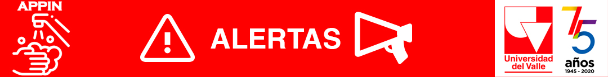

<ion-header>
  <ion-toolbar>
        
  </ion-toolbar>
</ion-header>

<ion-content class="ion-text-center" style="width: 100%;" >  
<ion-list *ngFor="let noti of notificaciones" class="ion-text-center" expand="block">
  <ion-item>    
    <ion-card [ngStyle]="{'background-color': noti.fechaCierre != null ? '#C1C0B8' :  '#FC0404' }" expand="block" class="ion-text-center" style="max-height: 80px;">
  <ion-card-content class="ion-text-center" >
  <ion-button expand="block" color="dawhitenger" class="ion-text-center"  
  [disabled]="noti.fechaCierre != null"
  (click)="IngresarLavado(noti.codRegistro)" routerLink="/inicio" >
  <b>Fecha de lavado:
    {{noti.fecha | date : 'dd/MM/yyyy'}}<br><br> Hora de lavado:{{noti.hora}}</b></ion-button>
  </ion-card-content>
</ion-card>
  </ion-item>  
</ion-list>

  <ion-fab-button color="light" href="/pagina-inicio"  horizontal="end" slot="fixed">
    <ion-icon name="arrow-undo-outline"></ion-icon>
  </ion-fab-button>
<ion-tabs>
  <ion-tab-bar slot="bottom" >
    <ion-tab-button tab="schedule" >
    <ion-icon name="thermometer-outline" color="danger" ></ion-icon>
      <ion-label>Sintomas</ion-label>
      <ion-badge color="danger">6</ion-badge>
    </ion-tab-button>

    <ion-tab-button tab="speakers" >
    <ion-icon name="hand-left-outline" color="danger"></ion-icon>     
    <ion-label>Lavado de manos</ion-label>
    </ion-tab-button>

    <ion-tab-button tab="map"  expand="block">
    <ion-icon name="body-outline" color="danger"></ion-icon>
      <ion-label>Cuidados</ion-label>
    </ion-tab-button>
  </ion-tab-bar>
</ion-tabs>
</ion-content>
